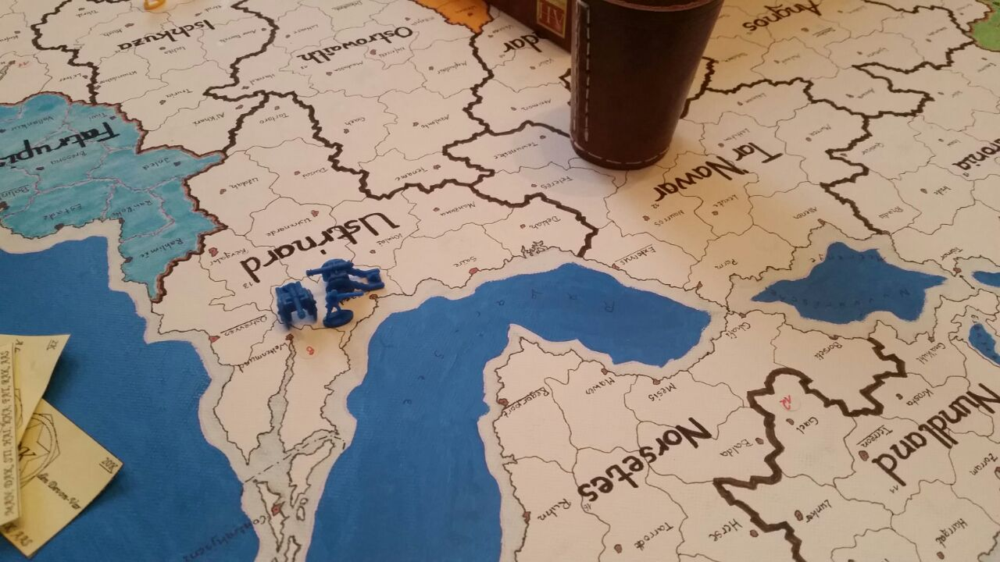
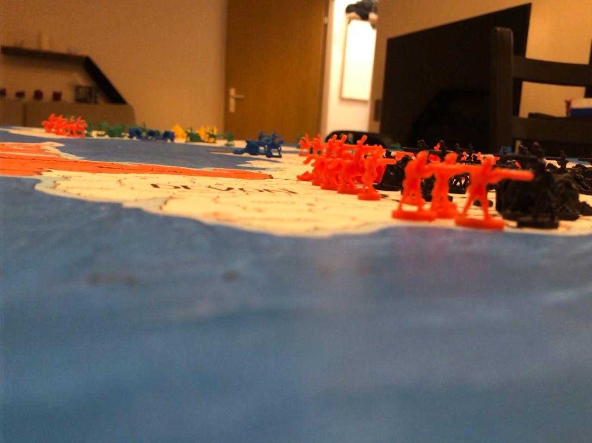
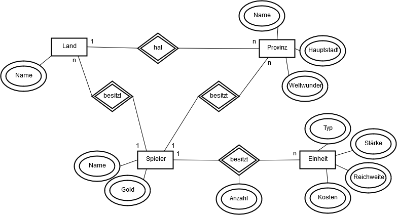
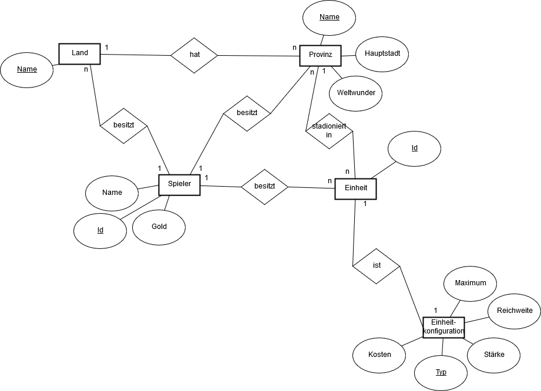

14.01.2018 - Notizen
- Provinzfaktor (aktuell: 1,4 pro Provinz)
- Hauptstädte, Weltwunder = + 0,6
- Provinz mit Hauptstadt und Weltwunder = 1,4 + 0,6 + 0,6
- 2/3 Provinzen eines Landes um dieses einzunehmen
- Ereignisse: Beschreibung, Auswirkung in Form von +/- Gold, +/- Einheiten
- Weltereignisse (am Ende jeder vollen Runde): Beschreibung, Typ, Auswirkung in Form von +/- Gold, +/- Einheiten oder anderen für alle oder bestimmte Nationen
- Zufallswürfel implementieren
- Einheiten können zu jedem Zeitpunkt verkauft werden
- Maximal drei Einheiten in einer Provinz/Schiff
- Kampf gegen neutrale Provinz = (Stärke) n:2
- Kampf gegen Spieler = n:m
- Kein Heimvorteil (Kampf ein eigenem Land/eigener Provinz)
- Handel unter Spielern um Einheiten, Provinzen
- Gold leihen unter Spielern mit Bedingungen
- feste Runden-/Zugzeit
Einheitenübersicht
| Einheitentyp | Kosten | Stärke | Reichweite |
|---|---|---|---|
| Infanterie | 9 | 1 | 2 |
| Kavallerie | 13 | 2 | 3 |
| Artillerie | 16 | 3 | 1 |
| Schiff | 29 | 1 | 1 Faden |
Eindrücke
  Die Animation mit dem Titel "Geilste Front ever" musste aufgrund der Dateigröße entfernt werden.
ER-Modell

Brainstorm
- Logging der Geschehnisse in Spielzügen
- Einheiten können zu jedem Zeitpunkt verkauft werden (Popup/Benachrichtigung für Spielleiter)
- Android/iOS-App
- Browserbasiert
- Message Broker
- Datenbank
- Einplatinencomputer als Host mit lokalem Netzwerk
15.01.2018 - Wegesnotizen
- Plattformunabhängig = webbasiert, lokal
- Spielstand und initiale Spielkonfiguration müssen geladen werden können
- Login für Spieler durch von Spieleleiter generiertem Passwort
- dynamisches und manuelles Update der angezeigten Übersicht
- Statistiken eines Spiels sammeln, eventuell an cloud.broderpeters.de für alle Spiele
16.01.2018 - Wegesnotizen
Automatisierung im Vergleich zum physischen Spielerlebnis
- Gold auszahlen und abrechnen
- Kampfsimulation, n:m: Vergleich der Summe von n zufallsgenerierten Zahlen mit der Summe von m zufallsgenerierten Zahlen
Spielleiter
- Startet und ?beendet? eine Runde (Spieler hat dennoch Zugzeit x, welche vom Spielleiter festgelegt wird
Randnotizen
- Maximal physisch vorhandene Einheiten eintragen und beachten
19.01.2018 - Wegesnotizen
- Fotografie des seitlichen Profils der Spielfiguren zur digitalen Abbildung
- sich drehende Würfel --> bei Erhalt der Zufallszahl, Stop und Zahlen bezeihungsweise Summen anzeigen
- Kampfergebnis mit Sound- und Bild-/Animationsuntermalung
- Provinzen mit Namen und Abstand zu anderen Provinzen --> neo4j?
19.01.2018 - Notizen
Zugablauf
- manuell: Zugstart nach Freigabe durch Spielleiter
- automatisch: Kostenkalkulation
- Kalkulation der Steuern anhand der Provinzen, Haupstädte und Weltwunder
- Abzug offener Schulden
- Auszahlung
- manuell: Kauf von Einheiten
- Prüfung, ob und wie viele Einheiten gekauft werden können
- Auswahl zu kaufender Einheiten
- Hintergrundberechnung mit aktuellem Vermögen, ob und wie viele Einheiten gekauft werden können
- Zusammenfassung ausgewählter Einheiten und Kosten
- Kaufbestätigung
- Einzahlung
- Mitteilung an den Spielleiter
- Setzen der gekauften Einheiten auf das Spielfeld
- Prüfen des Zielfeldes auf maximale Einheiten
- manuell: Verkauf von Einheiten
- Auflistung vorhandener Einheiten
- Auswahl zu verkaufender Einheiten
- Zusammenfassung ausgewählter Einheiten und Kosten
- Verkaufsbestätigung
- Auszahlung
- Mitteilung an den Spielleiter
- Entfernen der verkauften Einheiten vom Spielfeld
- manuell: Bewegen von Einheiten
- Übersicht aller möglich zu bewegenden Einheiten
- Auswahl der zu bewegenden Einheit(en)
- Auswahl des Zielfeldes
- Prüfen, ob Zielfeld gültigen Reichweite einhält
- Prüfen des Zielfelde auf maximale Einheiten
- Bestätigung durch den Spieler
- Bewegen der Einheit(en)
- Bestätigung durch den Spielleiter
- Prüfung, ob auf Zielfeld gekämpft werden kann
- Zusammenfassung der möglichen Kampfsituation (Kampfkraftverhältnis)
- Bestätigung durch den Spieler, ob auf Zielfeld gekämpft werden soll
- Kampfsimulation
- Auswertung der Kampfsimulation
- Mitteilung an den Spielleiter
- Entfernen besiegter Einheiten
- Zuordnung/Entfernen neuer Provinz
- Bestätigung durch den Spieler
- Bestätigung durch den Spielleiter
- manuell: Optionales Ziehen einer Ereigniskarte
- Auswertung der Ereigniskarte
- Bestätigung durch den Spieler
- automatisch: Beenden der Runde durch Erreichen der letzten Aktion oder Ablauf der Zugzeit
ER-Modell

Randnotizen
- Spielerreihenfolge wird durch Spielleiter festgelegt
- Spieler können Einheiten nur in ihrem Zug und nur nach dem Kauf von Einheiten und vor der Bewegung von Einheiten verkaufen
- Farbe des Spielers in Ecke einblenden
- Anstatt Schulden --> Gold auch in Minusbereich
- Maximale Einheiten pro Provinz --> Konfigurierbar